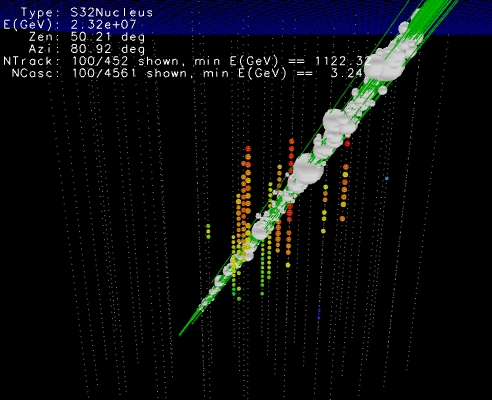

When muon reaches the ground the will experience the following interactions when travelling through matter with a higher density than air. The will losse energy mostly through the following processes:
Ionization. The continuous energy loss of muons passing through a medium as it ionize the material along the path. We saw however that ionization is mostly independent of the material, as most of them have values of \(Z/A \sim 0.5\).
Bremsstrahlung. Also called braking radiation. In the electric field of a nucleus or atomic electrons, muons can radiate high energy photons. If the photon has energy enough it can initiate an electromagnetic shower.
Pair production. A muon can radiate a virtual photon which, again in the electric field of a nucleus, can convert into a real \(e^+e^-\) pair. As in the case of bremsstrahlung, the pair production will initate an electromagnetic shower.
Photonuclear interactions. A muon can radiate a virtual photon which directly interacts with a nucleus in the muon propagation medium. The interaction is either electromagnetic or following the fluctuation of the photon into a quark-antiquark pair (i.e. a virtual vector meson). This interaction will generate an hadronic shower.
Muon Energy losses
The energy losses due to ionization are continuous while in radiation processes the energy is lost in bursts along the muon path. When a muon is travelling through a dielectric medium like ice or water, it will emit cherenkov photons as wells, but due to the stochastics energy losses electromagnetic and hadronic showers are generated along the muon track. The following figure illustrates this process:
It is worth noting that photonuclear interactions are subdominant when compared to bremsstrahlung and pair-production, so most of the showers will be electromagnetic showers. The equation that describes the energy loss for muons at high energy can be simplified to:
where \(X\) is the thickness of the material (in \(\mathrm{ g/cm}^2\)), \(\alpha\) is the energy loss due to ionization and \(\beta = \beta_{br} + \beta_{pair} + \beta_{ph}\) are the three discrete energy loss processes: bremsstrahlung, electron-positron production and electromagnetic interaction with the nuclei. Thickness is also given sometimes in units of meters water equivalent (1 m.w.e. = \(10^2 \mathrm{\; g/cm^2}\)). Due to the energy dependency of the radiative processes, higher energy muons will have more stochastic energy losses than lower energy muons.
The critical energy is when both losses are equal, ie \(\epsilon_\mu = \alpha/\beta\). Typical values are \(\alpha \simeq 2 \mathrm{ \;MeV\;g}^{-1} \mathrm{ \;cm}^2\) and \(\beta \simeq 4 \times 10^{-6} \;\mathrm{ g^{-1}\;cm^2}\), so \(\epsilon_\mu \approx 500\) GeV.
The following plots showd simulated muons bundles in IceCube. The stochastic energy losses are particular clear in the right figure.

Muon Range
By solving the energy loss equation we can estimate the range \(R\) for a muon \(E_\mu\), ie the underground depth this muon will reach until its energy is 0 (in reality the muon when reaching low energies will decay):
Assuming the muon spectrum at sea level can be approximated to a power law \(I_\mu(>E_\mu) = AE_\mu^{-\gamma}\) and using the relationship between range and energy we can write the depth-intensity relation (DIR):
The plot below shows the depth-intensity muons for vertical directions. The grey-area are neutrino-induced muons (horizontal, up-wards)
Neutrino Interactions
Weak interaction
Neutrinos feel only the weak force thus interactions with matter mediated by \(W\) and \(Z\) bosons with cross-sections typical of weak processes. Feynman diagrams factor along two lines:
Neutral current (NC) interactions - exchange of \(Z\)
Charged current (CC) interaction - exchange of \(W^{\pm}\)
Neutrinos will scatter from electrons as well as nuclear matter.
For energies \(E_\nu < 1 \mathrm{GeV}\) neutrinos interact with hadronds via elastic or quasielastic scattering.
For energies \(E_\nu \gg 1 \mathrm{GeV}\) neutrinos do not scatter on hadronds as a compound of quarks, they start to see and interact directly with the quarks, this is the so-called Deep Inelastic Scattering.
Neutrino Cross-sections at GeV
The anti-neutrino cross-section at GeV energies is a factor ~2 lower (naively should be 3, but the factor 2 comes from the structure function of the nucleus) than the neutrino cross-section due to the helicity.
At \(E_\nu \gg 1 \mathrm{GeV}\) the total DIS cross-section (ie, assuming CC and NC together) can be approximated to:
Sometimes the cross-section is expressed as \(\nu + N\) where \(N\) is the nucleon definition as:
\[N = \frac{n+p}{2}\]
Earth is transparent to GeV neutrinos
We are going to calculate the mean free path of neutrinos of energies of \(\sim GeV\). Note that mean free path can be expressed as:
\[l = \frac{1}{n_N \sigma_{\nu N}}\]
where \(n_N\) is the number density of nucleons and not atoms. As we saw in lecture 2 we can re-express the number density as:
\[n_N = \frac{N_A}{\mathcal{M}}\rho\]
where \(\mathcal{M}\) is the molar mass of one mole of nucleons and \(\rho\) is the mass density of the medium. However, by definition a mol of nucleons has a mass of 1 g (Remember that a mol of \(^{12}C\) atoms has a mass of 12 g). So, we can rewrite as \(n_N = N_A \rho\). Below there is another way to estimate the mean free path:
from astropy import constants as ctfrom astropy import units as uimport numpy as np#Earth massprint (ct.M_earth)#Neutron/proton massprint (ct.m_n)#Earth radiusprint (ct.R_earth)#number of nucleonsN = ct.M_earth/ct.m_n #Earth volumeVe =4/3*np.pi*ct.R_earth**3#Nucleon densityNd = N/Ve#Cross sections =1e-38* u.cm**2#Mean free path:L =1/(s * Nd.to(1/u.cm**3))print (f"The mean free path is: {L.to(u.km):.2f}")
Name = Earth mass
Value = 5.972167867791379e+24
Uncertainty = 1.3422009501651213e+20
Unit = kg
Reference = IAU 2015 Resolution B 3 + CODATA 2018
Name = Neutron mass
Value = 1.67492749804e-27
Uncertainty = 9.5e-37
Unit = kg
Reference = CODATA 2018
Name = Nominal Earth equatorial radius
Value = 6378100.0
Uncertainty = 0.0
Unit = m
Reference = IAU 2015 Resolution B 3
The mean free path is: 304808158.92 km
Neutrino Cross-sections at TeV
At low energies the valence quark parton distribution dominates and both the neutrino NC and CC cross-section grows linear with energy since the transfer momemtum is \(q^2 \ll M_{W,Z}\) and so the propagator term is \(\sim 1/M^2_{W,Z}\)
Above 10\(^{4}\) GeV where the gauge-boson propagator restricts the momentum transfer to values near \(M_{W,Z}\) (\(\sim 1/(q^2 - M^2_{W,Z})\)) and damps the cross-section increase.
Calculated neutrino cross sections taken from arXiv:1309.1764
At high energies the asymetry between neutrinos and antineutrinos is lost due to the interaction with sea quarks (\(q\bar{q}\))
Neutrinos interact mostly with hadrons (quarks) instead of electrons due the their larger target mass. However at \(E_\nu \approx 6.3\) PeV the Glashow resonance appears: \({\hbar \nu_e} + e \rightarrow W\) making the cross-section higher than the one with hadrons.
Earth is opaque to PeV neutrinos
At about 100 TeV the mean free path for neutrino-nucleus scattering is about 10\(^{10}\) c.m.w.e. which is about the matter thickness along the Earth diameter.
This means that UHE neutrino observatories (like IceCube) the flux of neutrinos comming from the nadir is stronly suppressed.
There is only one exception. A very high energy beam of \(\nu_\tau\) at one side of the Earth \(E\gg 1\) PeV can end up at the other side as lower energy \(\nu_\tau, \nu_e,\nu_\mu\) thought the tau regeneration effect: \(\nu_\tau \rightarrow \tau \rightarrow \nu_\tau\)
Neutrino Signatures in a Neutrino Detector
In CC \(\nu_e\) interactions an hadronic and EM shower initiated by the \(e\) is produced. About 20% of the energy goes in the hadronic shower and 80% to the lepton and therfore to the EM shower.
In CC \(\nu_\tau\) d) interaction again an hadronic and EM shower are produced as the \(\tau\) decays almost inmediately to pions or other charge leptons. In the decay another \(\nu_\tau\) is produced tau regeneration effect. At very high energyes the two showers can be separated giving a double bang signature or a lollipop if the first shower happens outside the detector.
In CC \(\nu_\mu\) the muon only undergoes radiation losses (not ionization) and hence the track of the muon can be reconstructed.
In NC only an hadronic shower is visible.
Event Rate in an Underground Experiment
An estimate of the detection rate of neutrino events is equivalent to calculate the rate of a neutrino-induced muon/cascades flux:
\(P_{\nu\rightarrow l}(E_\nu, E_{vis})\) is the probability that a neutrino interacts with an nucleus to produce a \(\mu\) or an EM or hadronic cascade with a minimum energy \(E_{vis}\)visible in the detector.
\(P_{shadow} (\theta, E_\nu)\). Probability of neutrino with zenith angle \(\theta\) and energy \(E_\nu\) of being absorved by Earth.
\({\mathrm{ d}N_\nu}/{\mathrm{ d}E_\nu}\). Neutrino flux at the surface.
Interaction probability: \(P_{\nu\rightarrow l}\)
The probability of a neutrino to produce a lepton or shower visible in the detector can be writen as:
where \(r_l\) is the detection range of the produced lepton/cascade with energy \(E_l\) ending with the minimal energy \(E_{vis}\), and \({\mathrm{ d}\sigma}/{\mathrm{ d}E_l}\) is the neutrino cross-section to produce a lepton/cascade with energy \(E_l\).
At high energy the event rate is dominated by neutrino-induced muons due to the long range of the high energy muons.
Earth Shadow: \(P_{shadow}\)
The mean free path of neutrinos can be expressed as \(\lambda = (N_A \sigma_{tot})^{-1}\). The shadow fact then can be expressed as:
\[P_{shadow} = e^{-N_A \sigma_{tot} X(\theta)}\]
Where \(X(\theta)\) is the column depth travelled by the neutrino through the Earth with a zenith angle \(\theta\).
See Exercises 2 for an evaluation of the event rate in an underground detector.
Neutrino Oscillations
Neutrinos are generated in flavor eingenstate however propagation is done in mass eingenstate, since each planar wave has a different frecuency given their different masses, the neutrino detected (also in flavor eingenstate) will have a different interference pattern than the one generated given rise to neutrino flavor oscillations.
As a result of these changes in relative phases, neutrinos oscillate from one flavor to another as they travel. Low-energy neutrinos oscillate in a shorter distance than high-energy neutrinos.
A curious aspect of quantum physics is that only the probability of the flavor of neutrino changes as it travels.
The neutrino only becomes a definite flavor when it interacts in a detector - by finding whether an electron, muon, tau is created.
The PMNS Matrix
The Pontecorvo-Maki-Nakagawa-Sakata matrix is the one that relates the mass eingenstates with the flavor eingenstates:
where \(s_{ij} = \sin \theta_{ij}\), \(c_{ij} = \cos \theta_{ij}\). The term \(\delta\) is a CP violation term, if \(s_{13} = 0\) we won’t be able to measure \(\delta\) as it always multiplies \(s_{13}\)
The 2-flavor mixing case
Let’s assume 2 flavor eigenstates identified as rotations of 2 mass eigenstates:
We assumed that the mass eigenstates are created with the same energy or momentum and so \(E_i = E_j\).This assumption is not necessary and it comes from the fact we use the plane wave approximation. Using the correct formalism of wave packets the result is the same.
Tutorial I: Plot the survival probability of \(\nu_e \rightarrow \nu_e\)
where we used the fact that at relativistic speeds \(t = x = L\) and a dodgy approximation where we assumed that the mass eigenstates are created with the same energy or momentum and so \(E_i = E_j\).This assumption is not necessary, but we find that whatever assumption is made you get the the same result. The fact that we have to make such an approximation comes from the way that we are modelling the mass eigenstates as plane waves. If we were to do the analysis assuming that the mass states were wavepackets instead we would not need the equal momentum (equal energy) assumption and would still get the same answer.
With this we can rewrite the oscillation probability as:
But this means that neutrinos oscillations can be described in terms of 6 parameters: \(\theta_{12}\), \(\theta_{13}\) and \(\theta_{23}\) plus 2 mass-squared differences, \(\Delta m_{12}^2\) and \(\Delta m_{32}^2\) and one CP violating phase \(\delta_{CP}\). Althought we can measured the mass-squared differences in neutrino oscillation experiments, we cannot know the absolute scales nor the mass hierarchy.
Where \(\Delta m_{12}^2 = \Delta m_{Sol}^2\) and \(\Delta m_{31(2)}^2 = \Delta m_{atm}^2\). Sometimes \(\Delta m_{atm}^2\) is defined as: \[\Delta m_{atm}^2 =\left| m_3^2 - \frac{(m_1^2 + m_2^2)}{2} \right|\]
Experimental Results on Oscillations
Assuming \(\Delta m_{21}^2 \ll \Delta m_{31}^2 \sim \Delta m_{32}^2\) and small \(\theta_{13}\) different detectors can prove different sectors of the oscillation parameters:
If \(\Delta m_{21}^2L/E \ll 1\) this experiments are sensitive to the oscillation \(P(\nu_\mu \rightarrow \nu_\tau) \simeq \sin^2 2\theta_{23}\sin^2\frac{\Delta m_{31}^2}{3E}L\)
If \(\Delta m_{21}^2L/E \ll 1\) this experiments are sensitive to the oscillation \[ P(\nu_e \rightarrow \nu_e) \simeq 1 - \sin^2 2\theta_{13}\sin^2\frac{\Delta m_{31}^2}{3E}L\]
If \(\Delta m_{31}^2L/E \gg 1\) this experimetns are sensitive to the oscillation \[ P(\nu_e \rightarrow \nu_e) \simeq 1 - \sin^2 2\theta_{12}\sin^2\frac{\Delta m_{12}^2}{3E}L\]
Solar Neutrinos
Neutrinos from the Sun are produced by some of the fusion reactions in the \(pp\) chain or the CNO cycle. The combined effect is:
\[4p \rightarrow ^4He + 2e^+ 2\nu_e\]
From the beginning of the solar-neutrino observation a deficit of the electron neutrino predicted by the Standard Solar Model was observed: the solar-neutrino problem
In 1999 SNO in Canada started taking data. This experiment was able to detect \(\nu_e\) by CC interactions and \(\nu_x\) by NC interaction solving the mistery of the solar-neutrino problem. It is now understood as a neutrino flavor oscillation. The results of SNO together with KamLAND (a long baseline neutrino detector) confirmed the Large Mixing Angle solution (LMA) of the solar sector:
First evidence of atmospheric neutrino oscillations came from Super-Kamiokande experiment in 1998. By scanning in zenith angle, is like changing the \(L\).
If atmospheric mixing is non-maximal, it remains to determine in which “octant” the mixing angle \(\theta_{23}\) lies. For a \(\theta_{23}\) in the first octant (\(< 45^{\circ}\)) the mass eigenstate \(\nu_3\) is tau heavy, i.e., the tau neutrino fraction is larger than the muon neutrino fraction. Conversely, for a \(\theta_{23}\) in the second octant (\(> 45^{\circ}\)) the state \(\nu_3\) is muon heavy.
The \(U_{PMNS}\) matrix must be modified to account for the the fact that electron neutrinos have an extra interaction not present for \(\nu_\mu\) and \(\nu_\tau\) when travelling through matter. Elastic scattering of \(\nu_e\) on electron can occur via exchange of a charged \(W\)-boson as well as by exchange of the neutral \(Z\)-boson adding a term \(V_e = G_F \sqrt{2}N_e\) in the mass differences for electrons.
Without entering in the maths, what happens here is that a resonance effect occurs, ie, even if the mixing angle is small in vacuum it can get amplified in matter. This resonance can be expressed as a condition on the electron density \(N_e\) which is appropriate for systems such as stellar interiors (Sun or supernovae too) where provided the core density is high enough, there is always a region in the neutrinos’ path exiting the star where it passes through resonance.
This is known as the MSW effect for the theorists who discovered it - Mikheyev, Smirnov, and Wolfenstein.
Tutorial II: Calculate the probabilities of \(\nu_e \rightarrow \nu_x\) as function of L/E
def PMNS_Factory(t12, t13, t23, d): s12 = np.sin(t12) c12 = np.cos(t12) s23 = np.sin(t23) c23 = np.cos(t23) s13 = np.sin(t13) c13 = np.cos(t13) cp = np.exp(1j*d)return np.array([[ c12*c13, s12*c13, s13*np.conj(cp) ], [-s12*c23 - c12*s23*s13*cp, c12*c23 - s12*s23*s13*cp, s23*c13], [ s12*s23 - c12*s23*s13*cp,-c12*s23 - s12*c23*s13*cp, c23*c13]])def posc(a, b, U, dm2, LEratio):""" Gives the oscillation probability for nu(a) -> nu(b) for PMNS matrix U, and L in km and E in GeV, and dm2 in eV^2 """ s =0for j inrange(2):for i inrange(j+1, 3): arg =5.068*dm2[i+j-1]*LEratio mxe = np.conj(U[a,i])*U[b,i]*U[a,j]*np.conj(U[b,j]) s +=-4*mxe.real*np.sin(0.25*arg)**2+2*mxe.imag*np.sin(0.50*arg)if a == b: s +=1.0return st12 = np.arcsin(0.312**0.5)t13 = np.arcsin(0.0251**0.5) #Controlls the size of the small wiggles.#t13 = np.arcsin(0.0)t23 = np.arcsin(0.42**0.5)dm2 = [ 7.58E-05, 2.27E-03, 2.35E-03]delta =0U = PMNS_Factory(t12, t13, t23, delta)LE = np.linspace(0, 36000, 3600)Pe = posc(0, 0, U, dm2, LE)Pm = posc(0, 1, U, dm2, LE)Pt = posc(0, 2, U, dm2, LE)fig, ax = plt.subplots(figsize=(12,4))ax.plot(LE, Pe, '-', label=r'$\nu_e \rightarrow \nu_e$')ax.plot(LE, Pm, 'k', label=r'$\nu_e\rightarrow\nu_\mu$')ax.plot(LE, Pt, 'r', label=r'$\nu_e\rightarrow\nu_\tau$')ax.set_xlabel("L/E (km/GeV)")ax.set_ylabel(r"Probability $\nu_e \rightarrow \nu_x$")ax.set_ylim(0,1)ax.grid()plt.legend(loc="best")plt.show()


{kind=link}
{kind=link}
{kind=link}
{kind=link}
{kind=link}
{kind=link}